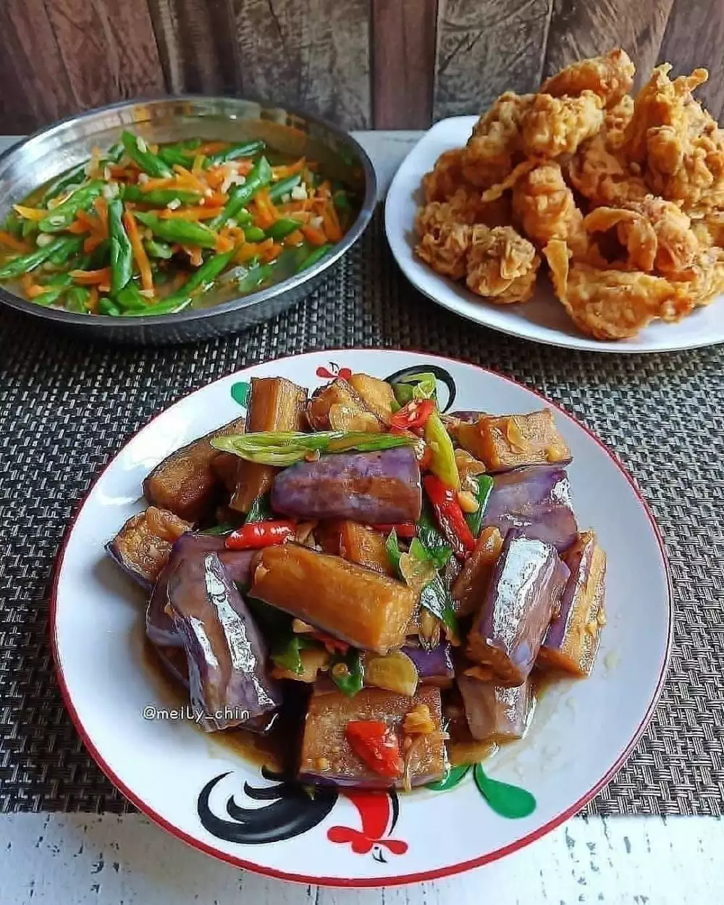

Terong Kecap

Bahan
- 3 buah terong ungu, potong-potong, goreng sebentar, tiriskan
- 2 siung bawang merah, iris
- 3 siung bawang putih, cincang
- 4 buah cabai merah, iris
- Daun bawang secukupnya
- 150 ml air
- Minyak untuk menumis
- 3 sdm kecap asin
- 2 sdm kecap manis
- 1 sdt kaldu jamur bubuk
- 1/2 sdt gula pasir
Cara Membuat
- Panaskan minyak dalam wajan, tumis bawang merah dan bawang putih hingga harum. Masukkan terong, aduk rata. Beri air. Biarkan mendidih.
- Masukkan bumbu, aduk rata. Test cicip.
- Masukkan cabai merah dan daun bawang. Aduk rata. Biarkan dimasak sampai agak meresap.
- Matikan api, pindahkan ke piring saji. Sajikan bersama nasi hangat.